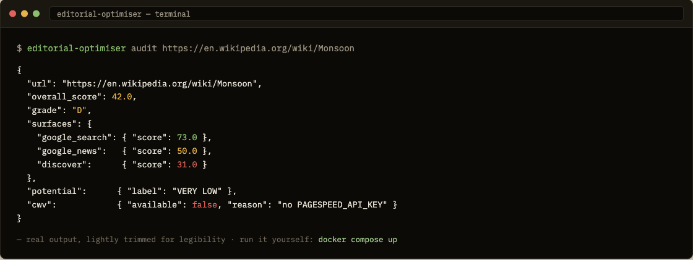
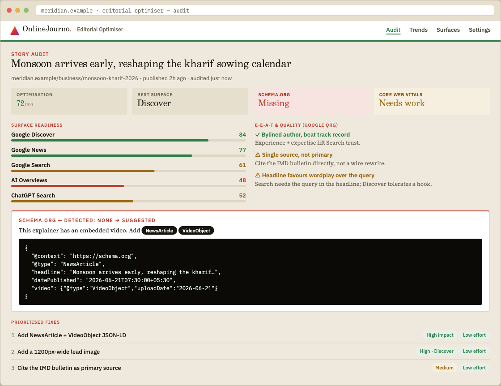
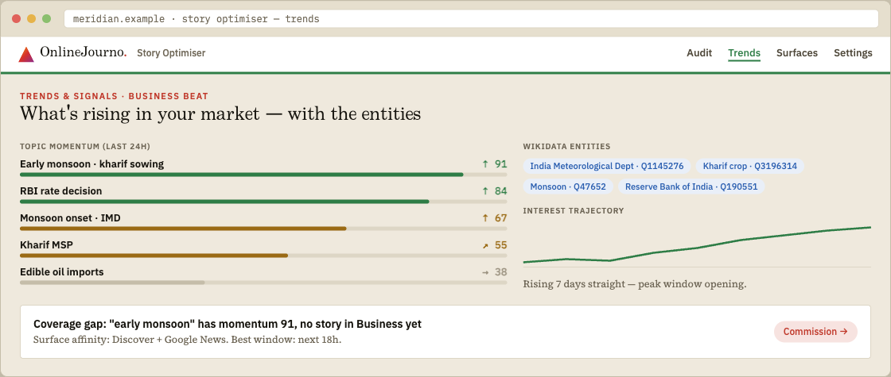
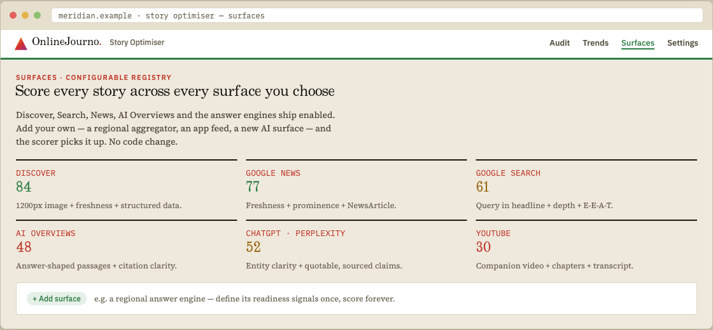

Audit any story for Google Discover, Search & News, AI Overviews, AI assistants and YouTube — with the fixes, the schema, and the why. Free, open-source, self-hosted.
Free · Apache-2.0 · runs on your machine · no account · vendor-neutral
SEO & E-E-A-T graded against Google's Search Quality Rater Guidelines — every finding in plain language.
Detects missing or wrong structured data and hands you corrected JSON-LD — NewsArticle, VideoObject and more.
Scores each story for Discover, Search, News, AI Overviews, ChatGPT/Perplexity/Gemini and YouTube — add your own surfaces.
Beat-scoped trending topics, enriched with Wikidata entities, with momentum and trajectory charts.
Discovery dies on a slow page. LCP, CLS and INP, checked per story, with what to do about each.
Ranked by impact and effort, so the desk knows what to do first — and why it matters.
The v1 engine works now, keyless — here's real output from the CLI auditing a live page. The web UI below is in design.

What your reporters and SEO desk actually see — every score with the reason behind it.



The machine surfaces. The journalist decides. It teaches as it audits — built by journalists, for journalists.
Grab it from GitHub and run docker compose up.
Set sources, surfaces, beats and market in one newsroom.yaml.
Paste a URL or pull your sitemap. Get the report and the fixes.
The full deterministic core — no API key, no cost.
Plug in any model — Claude, GPT, Gemini, or local. Your key, your call.
Open-source and self-hosted, launching from GitHub. Star the repo to follow, or leave your email and we'll tell you when it ships.